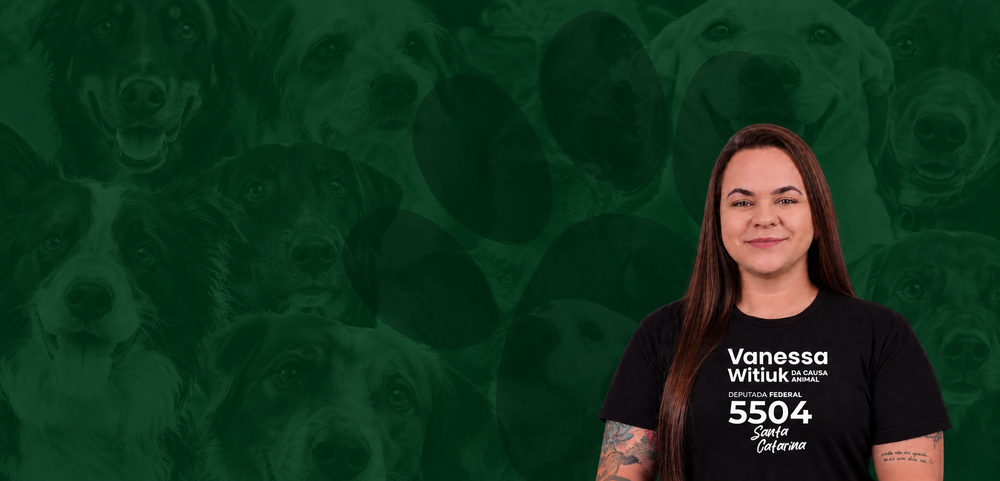
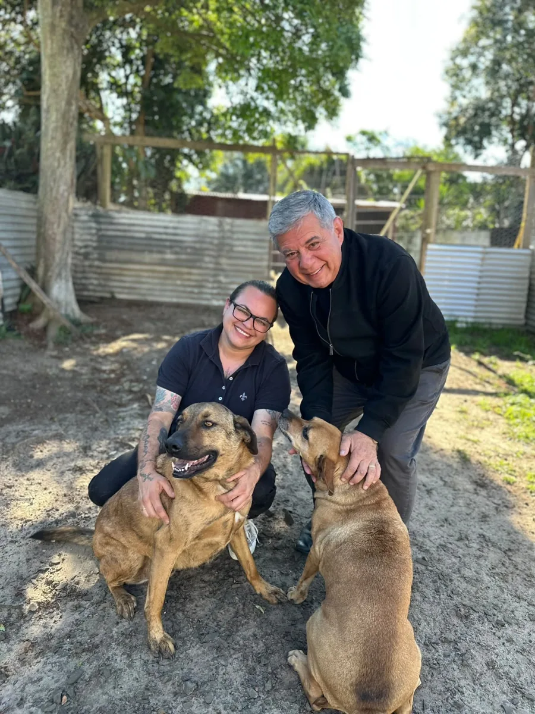
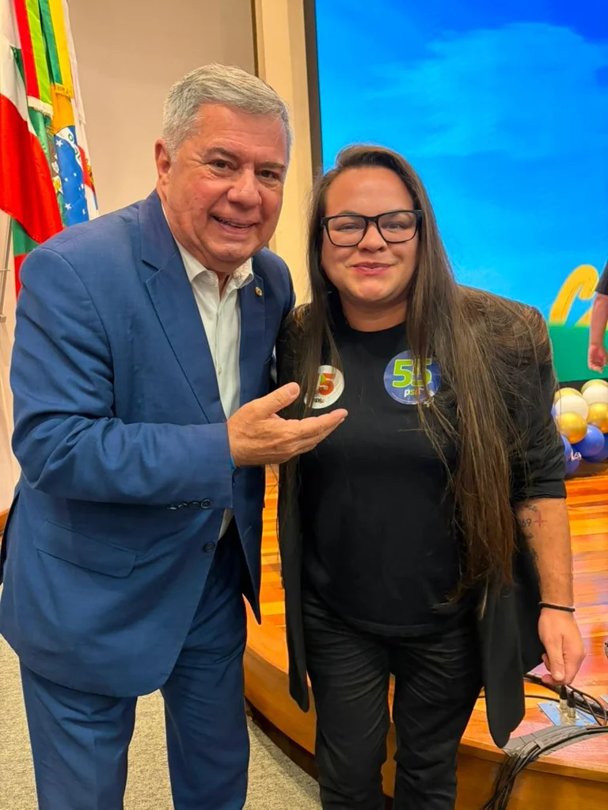

Câmara Municipal de Porto União
A Câmara lista Vanessa Witiuk Ferreira como vereadora em exercício pelo PSD neste mandato.
Abrir fonte ↗Perfil público · Santa Catarina · 2026
Médica veterinária, vereadora em Porto União e candidata a deputada federal por Santa Catarina.


01 / Trajetória
Vanessa se apresenta como médica veterinária com 17 anos de atuação na proteção animal. Em Porto União, exerce mandato de vereadora pelo PSD, segundo a Câmara Municipal.
Sua candidatura de 2026 a deputada federal por Santa Catarina consta em perfil eleitoral público. As informações sobre sua trajetória podem ser acompanhadas nos registros institucionais e nos canais indicados ao fim desta página.
Consultar perfil na Câmara Municipal02 / Atuação pública
O mandato municipal e a candidatura federal são apresentados separadamente para facilitar a consulta a cada fonte.
A Câmara lista Vanessa Witiuk Ferreira como vereadora em exercício pelo PSD neste mandato.
Abrir fonte ↗O perfil eleitoral consultado registra a candidatura pelo PSD, com o número 5504.
Abrir fonte ↗03 / Pautas
Temas informados para este perfil. Consulte os canais da candidata para obter a formulação completa e detalhes de implementação.
Ampliação do acesso a programas públicos de controle populacional ético de cães e gatos em Santa Catarina.
Discussão sobre apoio e recursos para pessoas e entidades que atuam no resgate e cuidado animal.
Fiscalização e responsabilização em casos de violência contra animais.
Debate sobre serviços veterinários públicos e acesso de famílias de baixa renda.
Registro público
Para conhecer ações, projetos e propostas, consulte as fontes institucionais e os canais públicos abaixo.

04 / Referências
Para verificar detalhes e eventuais atualizações das pautas, consulte os canais públicos da candidata.